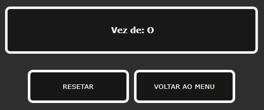

Modo "Jogador vs Jogador"
No modo "Jogador vs Jogador", a cada clique na tela troca a vez do jogador. Você pode chamar seus amigos para disputarem, passando o mouse para outro sempre que for a vez do próximo. Há um tela abaixo que mostra de quem é a vez e mostra também o resultado da partida quando ela acaba.
Modo "Jogador vs Computador"
No modo "Jogador vs Computador", o Jogador X começa a partida e o computador faz sua jogada meio segundo depois da escolha do Jogador X. Você pode escolher a dificuldade de jogo através do menu logo abaixo dos botões, clicando e selecionando a dificuldade desejada.